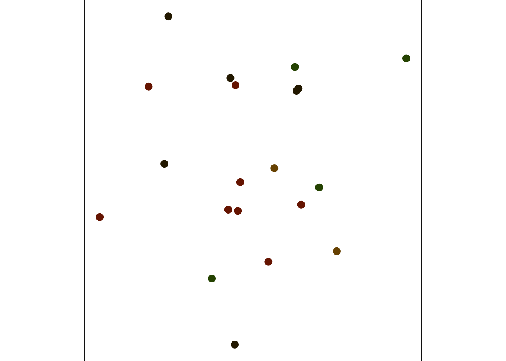
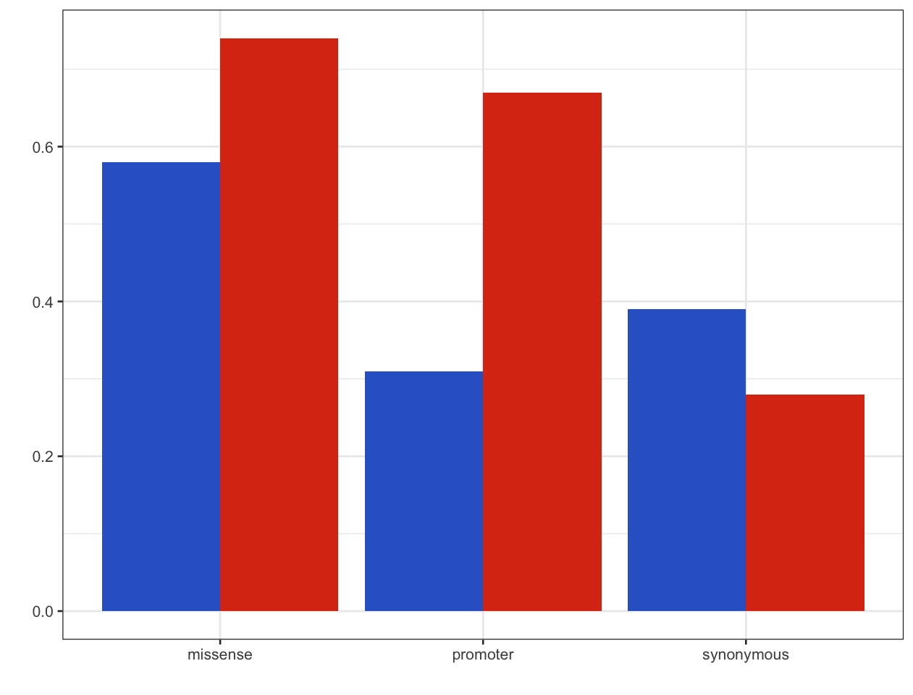

library(RColorBrewer)
display.brewer.all(type = 'seq') 4 Channels
There are two important points to have better figures:
- Properties of channel and data should be matched
- Not all channels are equally effective. The most important information should be represented using the most effective channel.
4.1 Channel and data properties
There are three different types of data:
- Quantitative: e.g. height, weight, gene expression level
- Ordered: e.g. size (small, medium, large), age groups
- Categorical: e.g. genes, populations, WT vs. mutant
And 2 types of channels:
- Quantitative: position on a scale (x and y variables), length (generally y variable), angle (y in a polar coordinate if theta is ‘y’), area (size), color (saturation or lightness)
- Qualitative: spatial grouping (x or y variables with categorical data), color (hue), shape (shape variable)
4.1.1 Special note on colors
It is important to note that you can code both quantiative and qualitative variables with color. However, different properties should be used. Also, it is better to use pre-defined color palettes. There are many packages offering various palettes, however, we recommend brewer.pal from RColorBrewer (it is available in ggplot2 as scale_color_brewer) as most comprehensive and friendly. Here are the sequential palettes, which should be used for quantitative or ordered variables:
Here are diverging palettes, which are again for quantitative variables but with a diverging scale. For example, it makes sense to use diverging palettes for correlations or change in gene expression as it can go both ways.
display.brewer.all(type = 'div') And the qualitative palettes:
display.brewer.all(type = 'qual')It worths mentioning that palette called ‘paired’ includes colors that represent both qualitative both also potentially quantitative scale. For example, this palette can be used when both all and significant results for multiple categories are represented, e.g. using brighter colors for significant ones and the others to represent background. As mentioned before, these palettes are available through scale_color_brewer, however, you can also access individual colors using:
brewer.pal(12, 'Paired') [1] "#A6CEE3" "#1F78B4" "#B2DF8A" "#33A02C" "#FB9A99" "#E31A1C" "#FDBF6F"
[8] "#FF7F00" "#CAB2D6" "#6A3D9A" "#FFFF99" "#B15928"4.1.2 Channel Effectiveness
4.1.2.1 Accuracy
Channel accuracy defines how close the human perception is to some objective measurement. For example, doubled brightness would be perceived as increased brightness but not as much as doubling it. Length is perceived very well.
4.1.2.2 Discriminability
Discriminability deals with whether the differences between items are easy for humans to perceive. For example, it is relatively reasonable to expect discrimination of 6-8 colors, but it is almost impossible to differentiate 20. Similarly, number of shapes that can be easily distinguished is limited. Moreover, filled shapes are differentiated easier.
4.1.2.3 Separability
Separability is about how different channels interact and how separable they are. For example, position and color (hue) are easy to separate and thus could be used to encode different information.
# generate data
n <- 20
df <- data.frame(
group = factor(letters[sample(1:2, n, replace = TRUE)]),
group2 = factor(letters[sample(1:2, n, replace = TRUE)]),
y = rnorm(n),
x = rnorm(n)
) %>%
mutate(
cl1 = c(colorspace::RGB(0.3, 0, 0, 0.3), colorspace::RGB(0.8, 0, 0, 0.3))[group],
cl2 = c(colorspace::RGB(0, 0.8, 0, 0.3), colorspace::RGB(0, 0.3, 0, 0.3))[group2]
)
df$colx <- sapply(1:n, function(i) {
x <- colorspace::mixcolor(0.4, df$cl1[[i]], df$cl2[[i]])@coords
rgb(x[1, 1], x[1, 2], x[1, 3])
})df %>%
ggplot(aes(x = group, color = group2, y = y)) +
geom_jitter(width = 0.1, size = 3) +
theme_void() +
guides(color = 'none') +
coord_fixed() +
theme(panel.border = element_rect(fill = NA))However, it is not as easy to separate color (hue) and size. It is easy to separate large ones from the small ones - however separating color in the smaller ones is not as easy.
df %>%
ggplot(aes(x = x, color = group2, y = y, size = group)) +
geom_jitter(width = 0.1) +
scale_size_discrete(range = c(3, 7)) +
theme_void() +
guides(color = FALSE, size = FALSE) +
coord_fixed() +
theme(panel.border = element_rect(fill = NA))Warning: Using size for a discrete variable is not advised.Warning: The `<scale>` argument of `guides()` cannot be `FALSE`. Use "none" instead as
of ggplot2 3.3.4.Next is an example of major interference: using height and width to encode different information. This is ineffective because what we first perceive is the area, and thus the grouping is perceived as small, medium, and large - where medium includes both narrow & tall and wide & short.
df %>%
ggplot() +
geom_rect(aes(xmin = x, ymin = y, xmax = x + c(0.1, 0.3)[group], ymax = y + c(0.1, 0.3)[group2])) +
theme_void() +
coord_fixed() +
theme(panel.border = element_rect(fill = NA))Next is an example of using fully integrated channels: red and green channels of the RGB color space. These are two channels but perceived as the color, an integrated value.
df %>%
ggplot(aes(x = x, y = y, color = colx)) +
geom_point(size = 3) +
theme_void() +
scale_color_identity() +
coord_fixed() +
theme(panel.border = element_rect(fill=NA))
It is not straightforward to say if using fully separable or integrated channels is better - it would depend on the data you want to encode. If for example, it is more important to convey groups in three, it may make sense to use width and height. If the data should be fully separable, then using spatial distribution and color is better.
4.1.2.4 Popout
Another property is that some channels are better in focusing attention to a distinct item. As you can see from the following examples, popout depends both on the channel and the surrounding items. For example, color pops out easily (panel a) and less dependent on the number of points (panel d). Whereas popout of a shape depends more on the number of points (panel b and e). Popout also depends on if multiple channels are combined. Even with smaller number of points, it is not as easy as it was before to detect red circle (panel c and f).
n <- 10
pntsize <- 5
p1 <- data.frame(x = rnorm(n), y = rnorm(n), group = letters[rep(1:2, each = n / 2)], pop = c(TRUE, rep(FALSE, n - 1))) %>%
ggplot(aes(x = x, y = y, color = pop)) +
geom_point(size = pntsize) +
scale_color_gdocs() +
guides(color = FALSE)
n <- 50
p2 <- data.frame(x = rnorm(n), y = rnorm(n), group = letters[rep(1:2, each = n / 2)], pop = c(TRUE, rep(FALSE, n - 1))) %>%
ggplot(aes(x = x, y = y, color = pop)) +
geom_point(size = pntsize) +
scale_color_gdocs() +
guides(color = FALSE)
n <- 10
p3 <- data.frame(x = rnorm(n), y = rnorm(n), group = letters[rep(1:2, each = n / 2)], pop = c(TRUE, rep(FALSE, n - 1))) %>%
ggplot(aes(x = x, y = y, shape = pop)) +
geom_point(size = pntsize) +
scale_shape_manual(values = c(15, 19)) +
guides(shape = FALSE)
n <- 50
p4 <- data.frame(x = rnorm(n), y = rnorm(n), group = letters[rep(1:2, each = n / 2)], pop = c(TRUE, rep(FALSE, n - 1))) %>%
ggplot(aes(x = x, y = y, shape = pop)) +
geom_point(size = pntsize) +
scale_shape_manual(values = c(15, 19)) +
guides(shape = FALSE)
n <- 10
p5 <- data.frame(x = rnorm(n), y = rnorm(n), group = letters[rep(2:1, each = n / 2)], pop = c(TRUE, rep(FALSE, n - 1))) %>%
ggplot(aes(x = x, y = y, shape = pop, color = group)) +
geom_point(size = pntsize) +
scale_color_gdocs() +
scale_shape_manual(values = c(15, 19)) +
guides(shape = FALSE, color = FALSE)
n <- 50
p6 <- data.frame(x = rnorm(n), y = rnorm(n), group = letters[rep(2:1, each = n / 2)], pop = c(TRUE, rep(FALSE, n - 1))) %>%
ggplot(aes(x = x, y = y, shape = pop, color = group)) +
geom_point(size = pntsize) +
scale_color_gdocs() +
scale_shape_manual(values = c(15, 19)) +
guides(shape = FALSE, color = FALSE)
ggarrange(p1, p3, p5, p2, p4, p6, ncol = 3, nrow = 2, labels = 'auto')4.1.2.5 Grouping
Grouping items by containment, connections, proximity, or similarity (using same shape, color) is a way to enhance the effectiveness by giving the message that the items linked forms a group. One very relevant example for biology is where we have comparisons of different categories for different types. For example, here, let’s say we have measured two different properties for 3 types of mutations. If I plot it without any grouping, it is not very clear what I want to compare and what should be percieved as a group:
df <- data.frame(
y = sample(seq(0.1, 1, by = 0.01), 6),
gr1 = c('promoter', 'missense', 'synonymous')[rep(1:3, each = 2)],
gr2 = paste('gr', 1:2, sep = "_")[rep(1:2, 3)]
) %>%
mutate(gr3 = paste(gr1, gr2, sep = '\n'))
# Without grouping
df %>%
ggplot(aes(x = gr3, y = y)) +
geom_bar(stat = 'identity', position = 'dodge') +
xlab('') +
ylab('')However, if I group mutations based their type, it becomes clear that I want to compare two categories within each type.
# With grouping
df %>%
ggplot(aes(x = gr1, y = y, fill = gr2)) +
geom_bar(stat = 'identity', position = 'dodge') +
xlab('') +
ylab('') +
scale_fill_gdocs() +
guides(fill = FALSE)
Side Note: Similarly, ordering categories based on some information, instead of using random or alphabetic ordering may help to convey information. If we plot the life expectancy in 15 countries, randomly chosen - without ordering them, it might not be easy to compare them if the values are close. Instead, by a simple ordering we can see which country has the highest life expectancy and compare different countries easily. However, it is important to note that sometimes - if the purpose of the figure is just to present data and not to give a message, using alphabetical ordering may also help as then people can easily find the country they search for (a better option is having an interactive plot, if possible).
cntx <- sample(unique(gapminder::gapminder$country), 15)
# Without ordering
gapminder::gapminder %>%
filter(country %in% cntx) %>%
group_by(country) %>%
summarise(lifeExp = median(lifeExp)) %>%
ggplot(aes(x = country, y = lifeExp)) +
geom_bar(stat = 'identity') +
theme(axis.text.x = element_text(angle = 90, vjust = 0.5, hjust = 1)) +
xlab('') +
ylab('Average Life Expectency')# With ordering
gapminder::gapminder %>%
filter(country %in% cntx) %>%
group_by(country) %>%
summarise(lifeExp = median(lifeExp)) %>%
ggplot(aes(x = reorder(country, lifeExp), y = lifeExp)) +
geom_bar(stat = 'identity') +
theme(axis.text.x = element_text(angle = 90, vjust = 0.5, hjust = 1)) +
xlab('') +
ylab('Average Life Expectency')